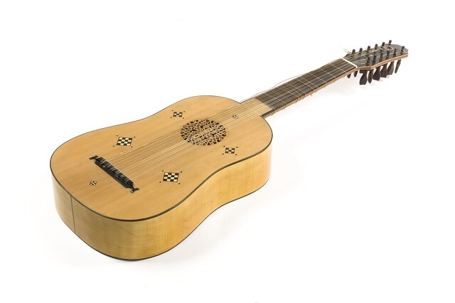

La guitarra tiene sus raíces en instrumentos antiguos como el laúd, la vihuela y la cítara, utilizados hace más de 3,000 años en civilizaciones como Egipto, Grecia y Roma.
Durante la Edad Media surgieron instrumentos similares a la guitarra actual, especialmente en España. La vihuela fue uno de los más importantes y sentó las bases del diseño moderno.
En el siglo XIX, Antonio de Torres Jurado estableció el diseño de la guitarra clásica moderna: seis cuerdas, mayor caja de resonancia y mejor proyección sonora.

En el siglo XX aparecieron las guitarras eléctricas, revolucionando la música popular y dando origen a géneros como el rock, blues y jazz.